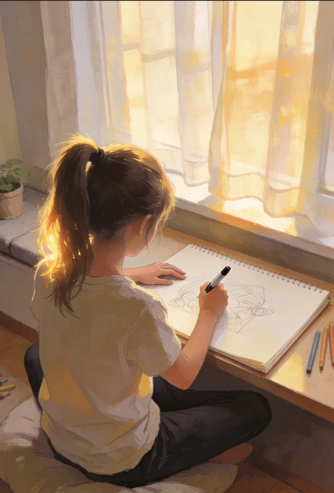
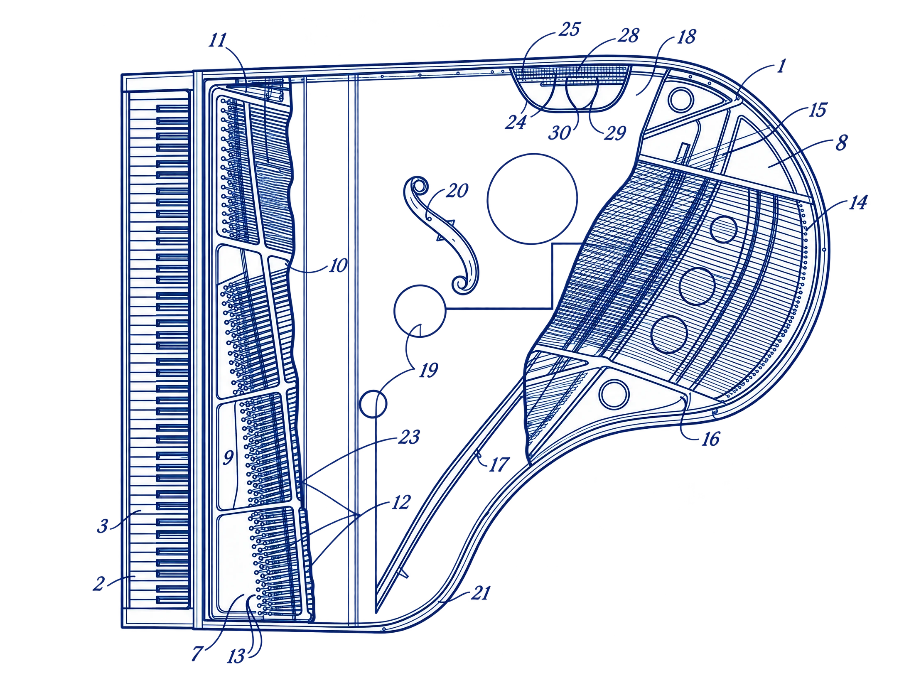

02ABOUT — KIM YEIL
Kim Yeil.
UX/UI Designer · Product Designer
정확한 구조 위에서, 더 나은 경험을 설계합니다.
건반을 눌러 저를 연주해 보세요

K Hello
Hello,
I'm Kim Yeil.
기존 서비스의 구조를 분석하고, 더 나은 흐름으로 다시 설계하는 UX/UI · Product Designer입니다.
I Analyze

피아노를 뜯어보듯, 서비스를 분석합니다. 도면의 01–05를 눌러 확대
M Selected works
Y Behind the score
This site is
my work, too.
:root {
--background: #05070b;
--accent: #4cc9ff;
--accent-2: #6f7bff;
}
.piano-key.is-pressed {
transform: translateY(5px);
}HTML · CSS · JavaScript로 직접 설계하고 구현했습니다. 빌드 도구도, 라이브러리도 없이.

E
- A1Figma
- A2Photoshop
- B1Illustrator
- B2HTML / CSS / JS
I Next stage
BEYOND
THE FRAME.
졸업 전시 · 2026.11.16–17
한국폴리텍대학 정수캠퍼스 시각디자인과 · 2027.02 졸업 예정
A – J키보드로도 연주할 수 있어요
03 SELECTED WORKS — Culture Pass · BITE · STILL
Introduction
완벽하지는 않아도,
기본기부터 단단하게 다지며
동작하는 가치를 만들어갑니다.
03 — SELECTED WORKSCulture Pass · BITE · STILL